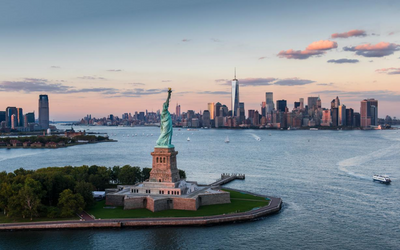
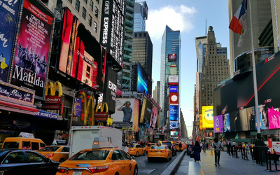

A cidade de Nova York compreende 5 distritos situados no encontro do rio Hudson com o Oceano Atlântico. No centro da cidade fica Manhattan, um distrito com alta densidade demográfica que está entre os principais centros comerciais, financeiros e culturais do mundo. Lugares para visitar: Central Park- Independente da época do ano, o Central Park é parada obrigatória de todo turista. Uma imensidão de verde no coração da cidade de Nova York.
Pontos Turísticos
|  | Estátua da Liberdade
A Estátua da Liberdade é o maior símbolo dos Estados Unidos. Com 93 metros de altura, representa a liberdade e esperança dos milhares de imigrantes que chegaram à América em busca de uma vida melhor. Presente da França para os Estados Unidos, a Estátua está localizada em Liberty Island, uma ilha na baía de Nova York. Para conhecê-la de perto você precisará fazer um passeio de barco. |
|  | Times Square
A Times Square é o encontro da Broadway com a Sétima Avenida. Já imaginou você se perdendo pelas lojas, restaurantes, letreiros iluminados e carros amarelinhos? Sempre muito movimentada, a visita vale para o dia ou para a noite. Aliás, durante a noite você vai achar que é dia, por causa da forte luz dos letreiros. |
O que está incluso?
Passagem aérea: passagens aéreas de ida e volta para New York - Aeroporto Internacional John F. Kennedy (JFK), em classe econômica, podendo haver conexão e/ou escala nos trechos.
Bagagem: sua mala de mão deve pesar até 10kg para ser acomodada no bagageiro do avião, nos voos de ida e volta. Para trechos no exterior, é possível que as companhias cobrem taxas extras para despachar a bagagem.
Hospedagem: em Nova York. A WanderLust definirá a hospedagem, a partir da disponibilidade e tarifário promocional dos parceiros. Nesta oferta, as opções de hospedagem se encaixam na categoria conforto e oferecem regime All Inclusive.
Entre no clima da sua viagem!